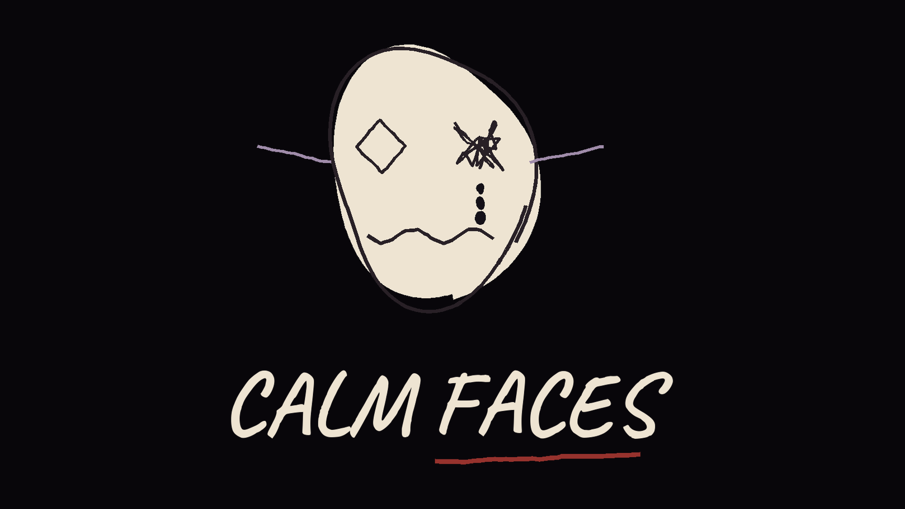
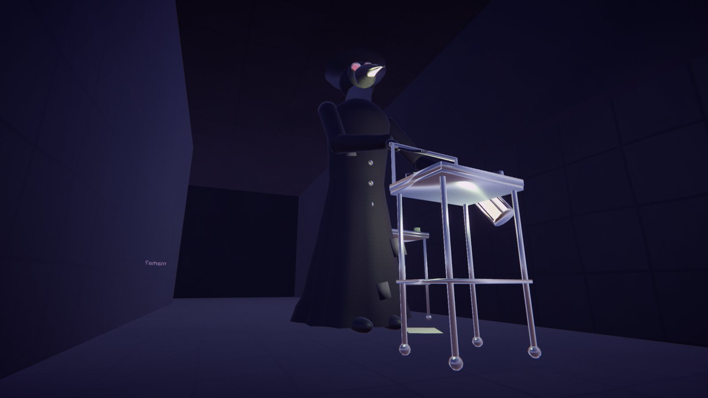
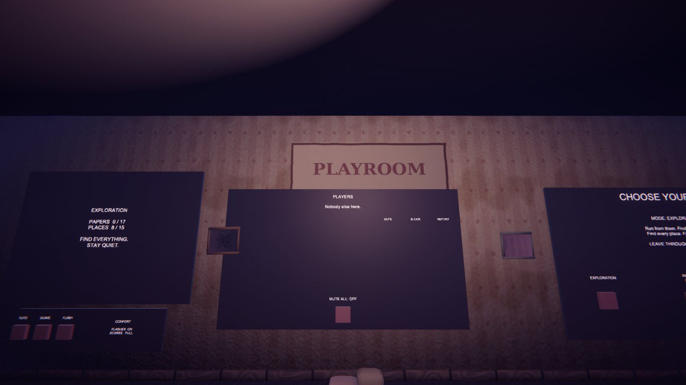
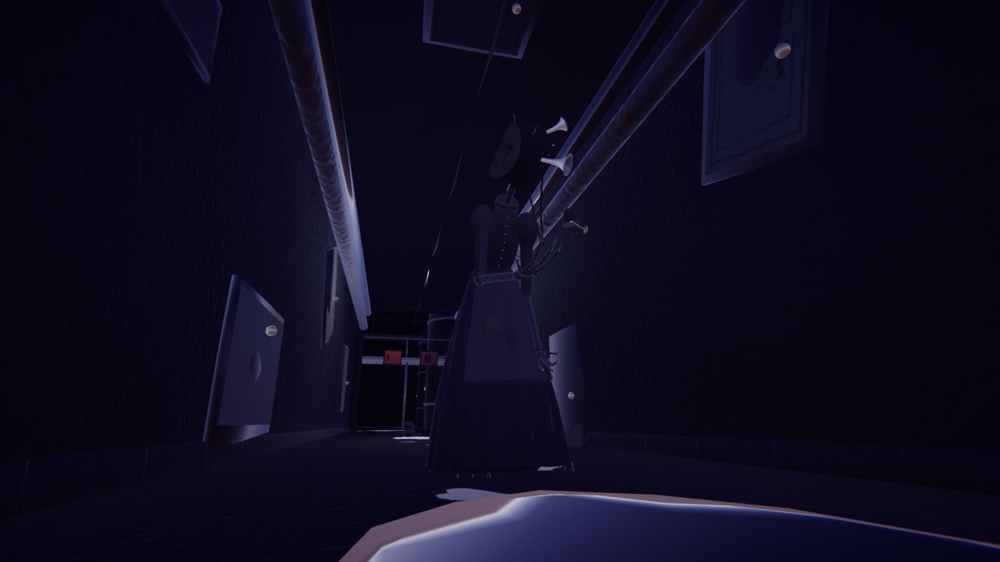
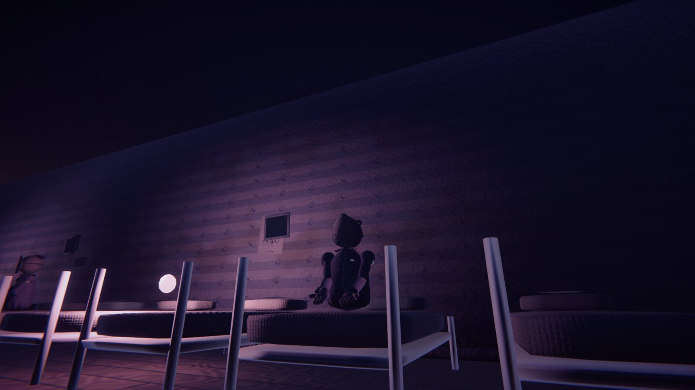

VR horror without legs. Push the floor with your hands, stay quiet, and never let them hear you.
The Marivaux Institute taught its 23 children to wear a calm face. One November night, the power went out, and none of them were ever seen again.
They pass you by.
The closest ones turn their heads.
Every one of them comes running.
Blind. She hunts by sound alone, and charges when she is close.
They only move when nobody is looking at them.
It glides through the dark corridors.
A crow mask, a lantern, a squeaking trolley. If the squeaking stops, he has seen you.




Run, jump and climb with your hands only.
Your real microphone and every object you knock over make noise.
Dormitory, switchboard, theatre, ink pool, laundry, and an infirmary hidden beneath the boiler room.
Thirteen pages and four secrets. Find the 23rd.
Jump scares, flashing lights (can be turned off in the playroom), disturbing themes involving children in an institution. No gore. Fast arm locomotion: comfort rating Intense.